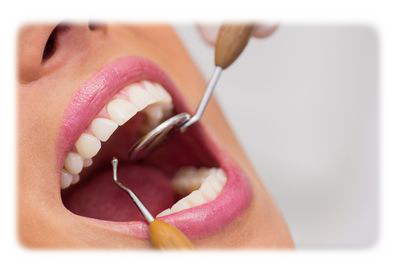

Odontología Conservadora

Obturación
Una obturación dental es una restauración de algún diente que ha sido dañado por caries con esta técnica como tratamiento conseguimos eliminar la caries y volver a dotar de la funcionalidad adecuada a la pieza dental enferma.
Tratamiento endodóntico
El tratamiento endodóntico trata el interior del diente. El conocer un poco la anatomía del diente le ayudará a entender el tratamiento endodóntico. Dentro del diente, debajo del esmalte blanco y una capa dura llamada dentina, hay un tejido blando llamado pulpa.